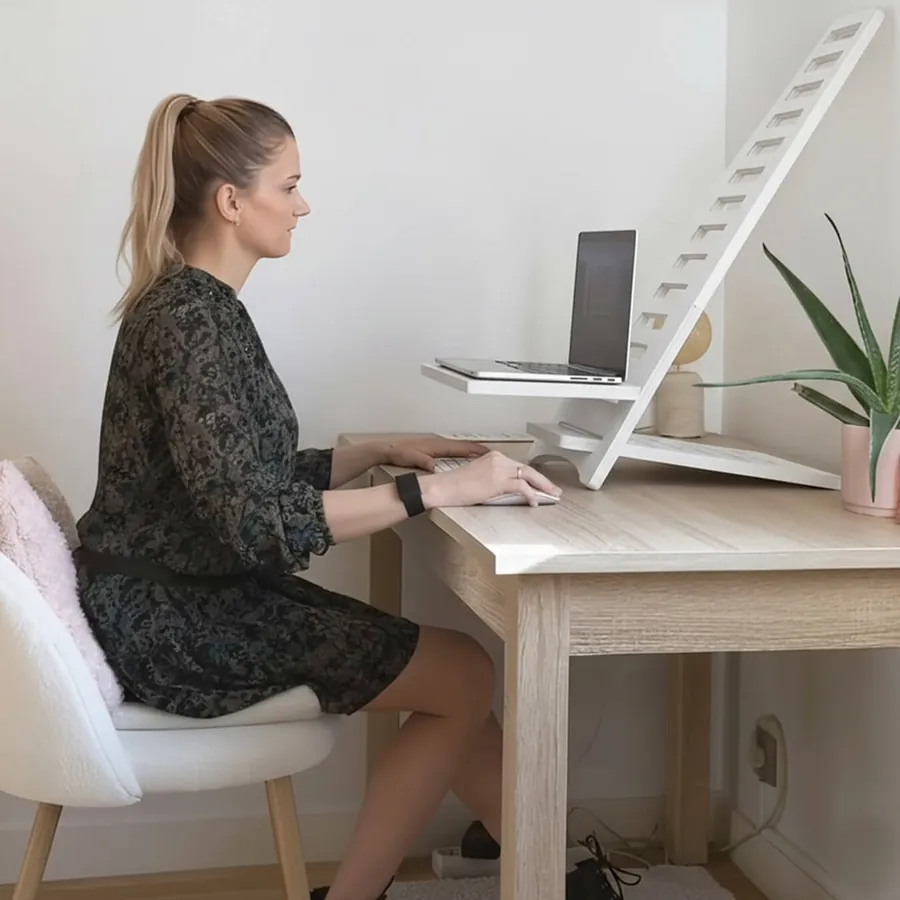
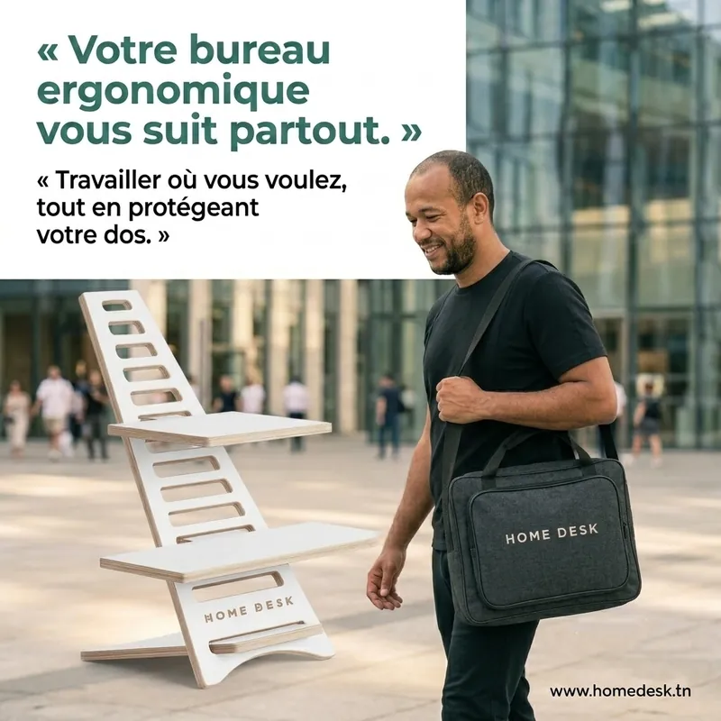
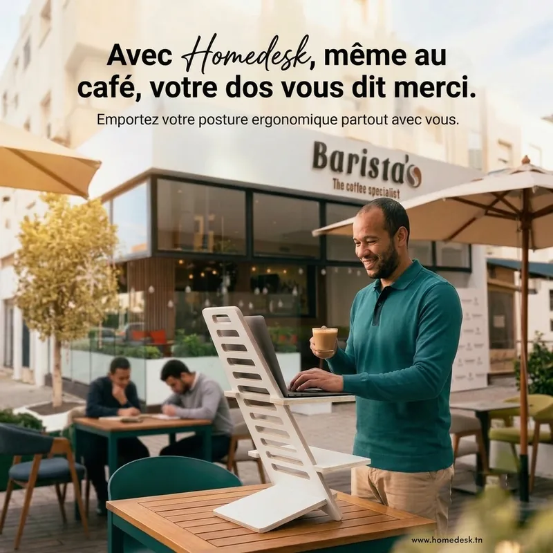
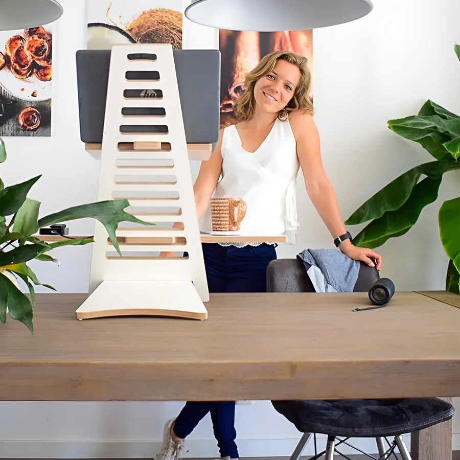
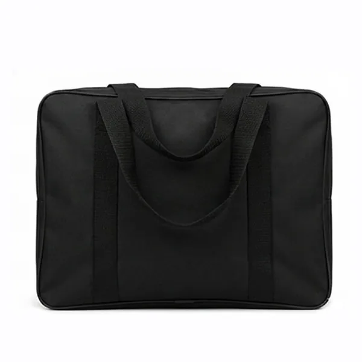
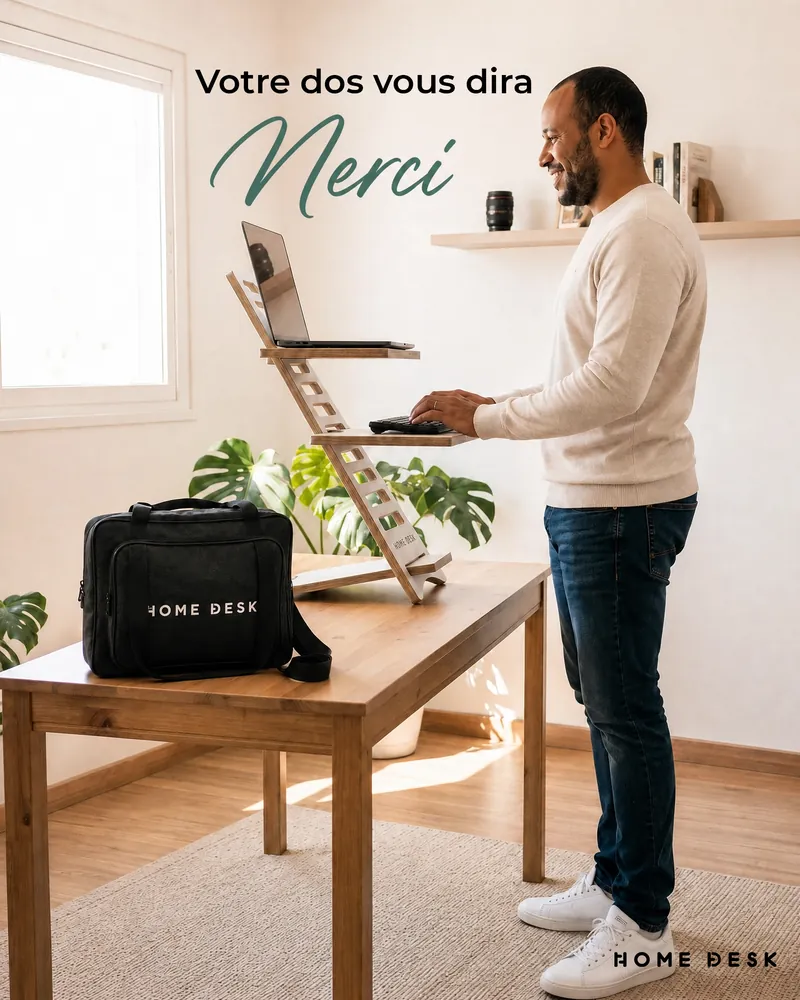

Maison
Session focus du matin, debout près de la fenêtre.
HomeDesk transforme n'importe quelle table en poste assis-debout. Tu le démontes, tu le glisses dans son sac, et tu retrouves ton setup chez chaque client.
À partir de 169 DT · Paiement à la livraison · Livraison gratuite


Ta liberté, c'est de choisir où tu travailles. Le revers : un setup différent chaque jour, et presque jamais adapté.
Trop basse, laptop à plat, la tête qui plonge vers l'écran pendant toute la session.
« Juste 10 minutes »… qui deviennent 3 heures avant la deadline.
Un coin de table prêté, aucun réglage, et toi qui t'adaptes à tout.
Tu as choisi la liberté pour bien travailler. Pas pour finir chaque journée courbé sur ton laptop.

HomeDesk se pose sur n'importe quelle table. Partout où tu ouvres ton laptop, tu retrouves un poste assis-debout.

Session focus du matin, debout près de la fenêtre.

Démonté, dans le sac, sur l'épaule.

Même une table de terrasse devient un poste debout.

Ton propre setup, sur la table qu'on te prête.
Plus besoin de t'adapter à chaque table : c'est la table qui s'adapte à toi.
Se pose sur une surface existanteDémonté et rangé dans son sac, il part avec ton laptop.
Sac de transport offert · valeur 85 DTTu travailles la tête droite, au café comme chez le client.
Plusieurs niveaux de hauteurCoup de mou avant la deadline ? Lève-toi et continue, en 5 secondes.
Assis ↔ debout en 5 secPas de moteur, pas de prise : il marche partout, même sans électricité.
100 % mécaniqueDesign blanc minimaliste : ton setup fait sérieux devant les clients.
MDF stratifié blanc · découpe CNC💳 Tu ne paies qu'à la réception
Glisse pour comparer.

 AVANTAPRÈS
AVANTAPRÈS
4,9/5 · +200 professionnels équipés en Tunisie
« Je change de lieu presque tous les jours. Le sac a tout changé : je le démonte en deux minutes et je retrouve mon poste debout au coworking comme au café. »
« Je passe des journées entières chez mes clients. Avant, je bossais sur un coin de table. Maintenant, j'arrive avec mon setup et je travaille debout quand je veux. »
« Je l'ai pris pour la maison et je l'emmène finalement partout. Payé à la livraison, aucune mauvaise surprise. La version avec sac vaut vraiment le coup. »


La version principale est livrée avec un sac de transport sur mesure. HomeDesk se démonte sans outil, se range à plat, et part avec toi.
Tu ne le déplaceras jamais ? Essentiel sans sac : 169 DT.



| Poids | Medium : 5 kg · Large : 7 kg |
|---|---|
| Encombrement | Medium : 36 × 22 cm · Large : 45 × 34 cm |
| Hauteur | Medium : 55 cm · Large : 68 cm |
| PC compatible | Jusqu'à 17 pouces |
| Montage | Sans outil, en quelques minutes |
| Électricité | Aucune, 100 % mécanique |
Moins de 1,87 m → Medium. Plus de 1,87 m → Large. Pour bouger, prends la version avec sac.

Jusqu'à 1,87 m · sac de transport + porte-clés

Plus de 1,87 m · étagère tél/tablette en plus
Il restera toujours au même endroit ? HomeDesk Essentiel sans sac dès 169 DT (−30 DT).

Tu paies seulement quand tu reçois ton HomeDesk. Ensuite, tu as 3 jours pour l'emmener au café, au coworking ou chez un client. Pas convaincu ? Tu es remboursé.
Oui. HomeDesk se démonte sans outil et se range dans son sac de transport, livré avec la version principale. Le support pèse 5 kg en Medium et 7 kg en Large.
Il se pose sur une surface existante : bureau, table de café, table de coworking. Il faut une surface d'environ 36 × 22 cm pour la Medium et 45 × 34 cm pour la Large.
Medium si tu mesures jusqu'à 1,87 m (hauteur 55 cm). Large au-delà de 1,87 m (hauteur 68 cm, avec une étagère pour téléphone ou tablette en plus).
Si tu le déplaces, même de temps en temps, prends la version avec sac : il est offert (valeur 85 DT). S'il reste toujours au même endroit, la version Essentiel sans sac te fait économiser 30 DT.
Non. Les pièces s'assemblent sans outil, en quelques minutes. Ensuite, passer d'assis à debout prend 5 secondes.
À la livraison, en espèces. Aucun paiement en ligne, aucun acompte. La livraison est gratuite partout en Tunisie.
Tu as 3 jours pour l'essayer. Pas convaincu ? Tu es remboursé.
Emporte ton setup assis-debout partout, avec son sac offert. Tu paies seulement quand tu le reçois.
199 DT avec sac offert · Livraison gratuite · 3 jours pour essayer